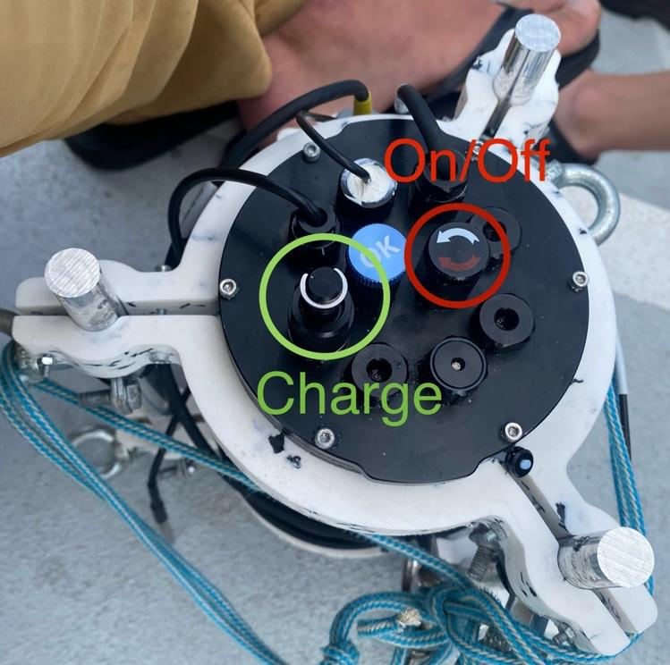

Quick usage guide
Turn on the CTD
The CTD can be turned on by closing (turning clockwise) the on/off switch as marked in the image below. 
Connect to the CTD
The CTD will start after turning on the power supply. Please note that this might take up to one minute.
A Wi-Fi network called CTD will then appear. Connect to it with the password CTDCTDCTD.
Development Build Access point
Please note that the Access Point name for the development build is called CTDDEV, but has the same password CTDCTDCTD
For further settings and system upgrades, it is possible to connect over SSH ssh ctd@192.168.42.1 and password ctd.
Record data using the web interface
If you are connected to the CTD Wi-Fi, the web interface is reachable over http://192.168.42.1
Web interface is currently being developed
The web interface is currently being developed. Some functionality is missing, and there are still some bugs. Mainly, there is no auto-reload, so please reload the web-page after starting a measurement and before stopping a measurement on the development web interface.
Start a recording
To start a recording, click the button Start Manual Run on the webinterface. Only click it once. To make sure the recording has started, reload the page.
Stop a recording
To stop the recording, click on the button Stop Running of the corresponding run in the webinterface.
Download data
To download the data, locate the desired run in the list, and click on Download data
Take a measurement with the CTD
Don't lose the CTD lol
Always make sure that the rope of the CTD is attached correctly, and the pressure closure (the round screw thingy on top with OK written on it) is fully screwed close. Note down the GPS coordinates, the depth and the water current direction in the unlikely case it gets lost.
To take a measure:
- Attach the rope, check if the CTD is closed correctly, and remove the caps of the sensors
- Make sure the boat is stopped and not moving too much
- Note down the current GPS location and time
- Connect to the CTD webinterface, start a manual run (as noted above), reload the webpage and write down the run-id - this is the number indicated at the beginning of the
Currently runningentry. - Put the CTD into the water, firmly attach the end of the rope to the boat
- (When using for the first time, you might want to leave it in the water for ~3 minutes at 20cm depth, then take it out again, and check if no water got inside)
- Lower the CTD into the water at a constant speed - for example 5cm/s -> 10 minutes to lower 30m
- Leave the CTD at the lowest point for ~1 minute for the readings to stabilise
- Pull the CTD up again. You can pull it up faster than the speed for lowering it. It also doesn't have to be constant.
- Take the CTD out of the water
- Connect to the Wi-Fi and webinterface again and stop the recording
- Download the data of the run by clicking on the corresponding button